Relatório de Critérios de Aceite — Abertura do Prontuário e Unidade de Referência
Resumo
9 critérios de aceite, <b>todos os 9 evidenciados no navegador</b>. Nenhum critério reprovado. A suíte da história fecha <b>22 testes / 120 asserções</b>, incluindo 4 testes dedicados ao isolamento entre municípios. Esta é a segunda emissão do relatório: na primeira, o CA04 ficara parcial porque a massa não tinha família com endereço, e o CA08 fora anotado como atendido de forma vacuosa. A massa foi completada — a família sem unidade passou a ter endereço em bairro nomeado a partir de uma unidade — e o CA04 agora é demonstrável na tela; o CA08 foi reavaliado contra o texto do próprio chamado, que reconhece que o registro de acompanhamento ainda não existe. Detalhes em “Observações e ressalvas”.
| CA | Critério | Status |
|---|---|---|
| CA01 | Abrir prontuário definindo a unidade | ATENDIDO · navegador |
| CA02 | Relação de famílias sem unidade de referência | ATENDIDO · navegador |
| CA03 | Correção some da relação | ATENDIDO · navegador |
| CA04 | Nenhuma unidade é atribuída automaticamente | ATENDIDO · navegador |
| CA05 | Aviso ao referenciar em unidade sem número MDS | ATENDIDO · navegador |
| CA06 | Trocar a unidade de referência | ATENDIDO · navegador |
| CA07 | Operacional não referencia em unidade onde não está lotado | ATENDIDO · navegador |
| CA08 | Abrir prontuário não coloca em acompanhamento | ATENDIDO · navegador |
| CA09 | Isolamento entre municípios | ATENDIDO · automatizado |
CA01 — Abrir prontuário definindo a unidade ATENDIDO · navegador
Critério (Gherkin): Dado que sou Operacional do Tenant com o add-on LGPD, lotado no "CRAS Centro" E que a família Silva foi importada do CadÚnico sem unidade de referência Quando eu abrir o prontuário atribuindo o "CRAS Centro" e confirmando Então a família passa a ser referenciada no "CRAS Centro" E a data de abertura é registrada E o prontuário apresenta o número do prontuário, a pessoa de referência, o tipo e o nome da unidade
Como foi testado: Login como o operador com add-on LGPD. Menu Famílias sem Unidade → Abrir na família importada sem unidade → selecionar E2E CRAS Centro → Abrir prontuário.
- POST /families/{uuid}/open-record → 200 OK.
- A família passa a ser referenciada na unidade escolhida (social_unit_id = 1, E2E CRAS Centro).
- A data de abertura é registrada: referenced_at = 2026-08-27, e a tela exibe “Aberto em 27/08/2026”.
- O autor da abertura fica gravado (record_opened_by = o profissional que confirmou).
- O prontuário apresenta os quatro elementos exigidos: nº do prontuário (E2E-9900000003), pessoa de referência (E2E Família Sem Unidade), e tipo + nome da unidade (“Centro de Referência de Assistência Social · E2E CRAS Centro”).
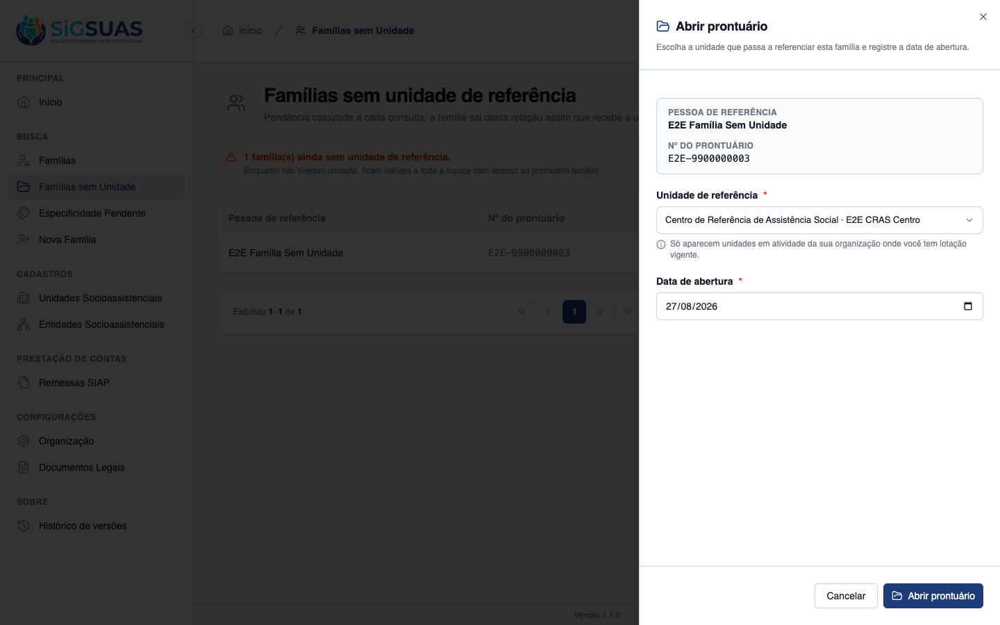
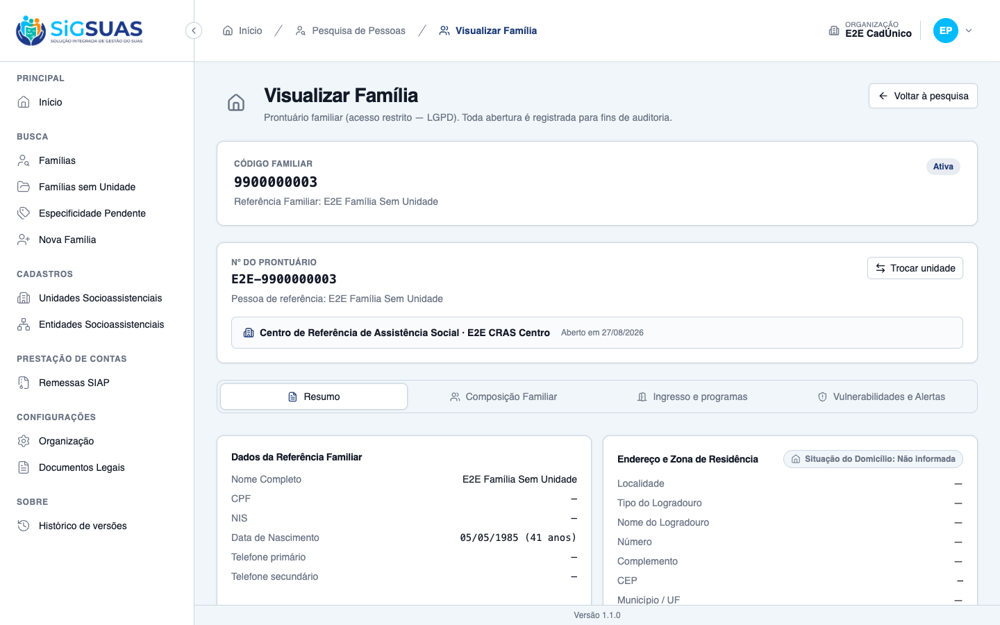
CA02 — Relação de famílias sem unidade de referência ATENDIDO · navegador
Critério (Gherkin): Dado que existem 40 famílias importadas do CadÚnico sem unidade de referência Quando eu consultar a relação de famílias sem unidade Então vejo as 40 famílias, identificadas pelo nome da pessoa de referência E cada uma oferece caminho direto para a atribuição da unidade
Como foi testado: Menu Famílias sem Unidade, como operador com add-on.
- GET /families/without-reference-unit?per_page=15&page=1 → 200 OK — a relação é paginada.
- Cada família é identificada pela coluna <b>Pessoa de referência</b>, como o critério exige.
- A coluna <b>Ações</b> traz o botão “Abrir”, que é o caminho direto para a atribuição da unidade — sem passar por outra tela.
- A tela declara a natureza da pendência: “Pendência calculada a cada consulta: a família sai desta relação assim que recebe a unidade.”
- A massa de evidência contém 1 família nesse estado, não 40 — o número do cenário é ilustrativo; o que o critério exige (identificação e caminho direto) está evidenciado.

CA03 — Correção some da relação ATENDIDO · navegador
Critério (Gherkin): Dado que atribuí o "CRAS Centro" à família Silva Quando eu consultar a relação de famílias sem unidade novamente Então a família Silva não aparece mais E as demais continuam listadas
Como foi testado: Logo após a abertura do prontuário, retorno automático à relação de famílias sem unidade.
- A família atribuída deixa a relação imediatamente.
- A tela passa a exibir “Nenhuma família sem unidade de referência — Todas as famílias desta organização já têm unidade de referência registrada.”
- A pendência é recalculada a cada consulta, e não guardada como estado — o que torna a saída da relação consequência automática da atribuição.
- Nesta massa não há outras famílias pendentes para demonstrar a permanência das demais; a suíte cobre esse ponto (“it drops the family from the pending list as soon as it gets a unit…”).
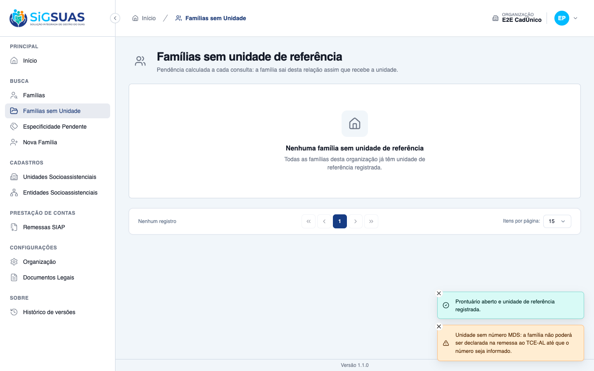
CA04 — Nenhuma unidade é atribuída automaticamente ATENDIDO · navegador
Critério (Gherkin): Dado que a família Souza tem endereço no bairro atendido pelo "CRAS Rural" Quando a família for importada do CadÚnico Então ela permanece sem unidade de referência E nenhuma unidade é atribuída pelo sistema com base no endereço
Como foi testado: A família de evidência recebeu endereço completo — logradouro, número, CEP, município e um bairro deliberadamente nomeado a partir de uma unidade (Bairro E2E CREAS). Em seguida: consulta ao prontuário e abertura do diálogo de atribuição, sem escolher unidade.
- A família tem endereço completo, visível no prontuário: “Localidade: E2E CREAS · Rua E2E do Bairro do CREAS, 100 · CEP 60000000 · Fortaleza/CE”.
- <b>Mesmo com o endereço preenchido, ela permanece sem unidade de referência</b>: o prontuário exibe “Prontuário sem unidade de referência” e o campo está NULL em banco.
- O bairro foi nomeado de propósito a partir de uma unidade existente: se o sistema deduzisse a unidade pelo endereço, este seria o caso em que ele erraria. Não deduz.
- O diálogo de atribuição abre com <b>nenhuma unidade pré-selecionada</b> — o campo mostra “Selecione a unidade”. O sistema não propõe nem sugere.
- Ao tentar confirmar sem escolher, a validação recusa (“Selecione a unidade de referência.”) e <b>nenhuma requisição é enviada</b> — a família continua sem unidade.
- O Action declara a regra no próprio código: não deduz unidade por endereço, território ou proximidade — a unidade chega escolhida no payload.
- Cobertura automatizada correspondente: “it never assigns a unit by itself — the payload must carry the choice”.
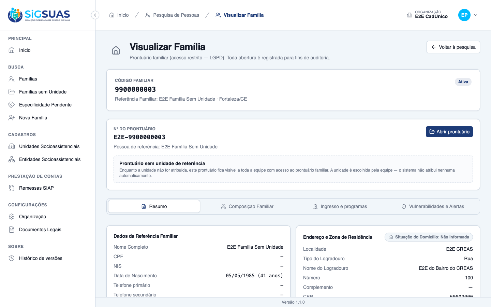
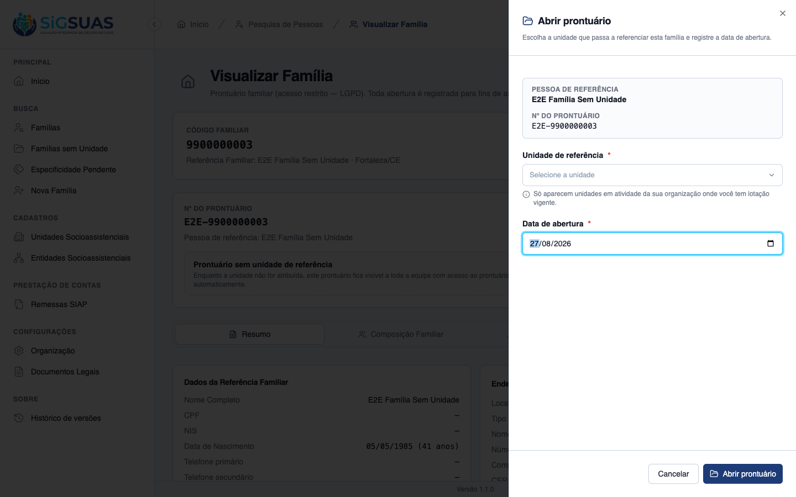
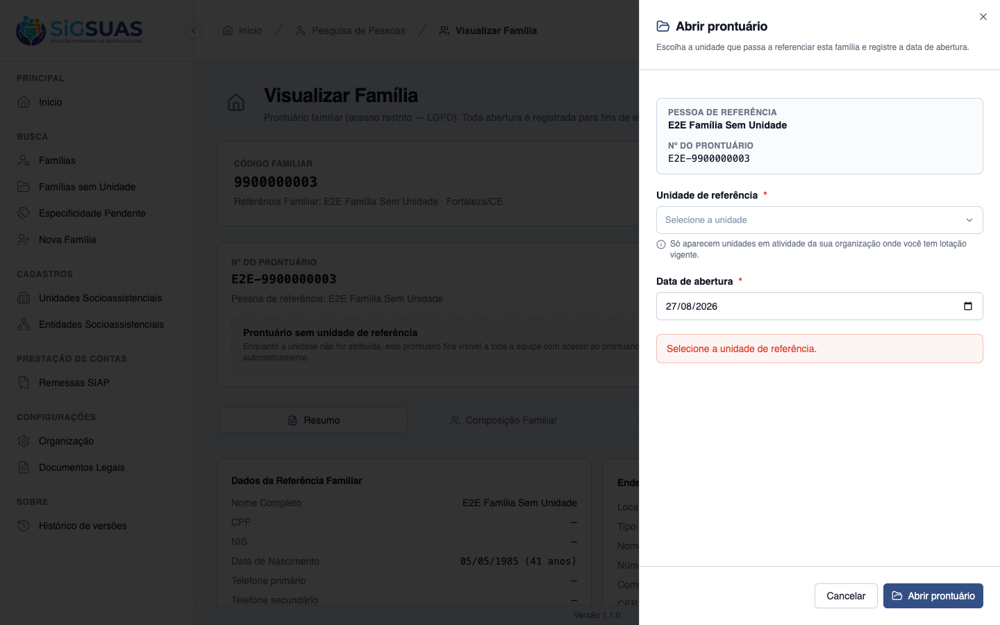
CA05 — Aviso ao referenciar em unidade sem número MDS ATENDIDO · navegador
Critério (Gherkin): Dado que a unidade "CRAS Alto do Cruzeiro" está sem o número MDS informado Quando eu abrir um prontuário atribuindo essa unidade Então o prontuário é aberto normalmente E o sistema avisa que a família não poderá ser declarada na remessa ao TCE-AL enquanto o número MDS da unidade não for informado
Como foi testado: Abertura do prontuário atribuindo a unidade E2E CRAS Sem MDS (mds_number = NULL em banco), e comparação com a mesma tela ao escolher o E2E CRAS Centro, que possui número MDS.
- Ao escolher a unidade sem MDS, o aviso aparece ANTES de confirmar: “A unidade E2E CRAS Sem MDS está sem o número MDS informado. A família não poderá ser declarada na remessa ao TCE-AL enquanto esse número não for informado. O prontuário será aberto normalmente.”
- O aviso é NÃO-BLOQUEANTE: a confirmação prossegue e o prontuário abre normalmente (200 OK).
- O aviso é condicional — ao escolher o E2E CRAS Centro, que tem número MDS, nenhum alerta é exibido.
- O aviso não vive só no momento da abertura: é recomputado no payload do próprio prontuário (FamilyResource.php:114), de modo que a equipe continua vendo a pendência ao reabrir o registro.
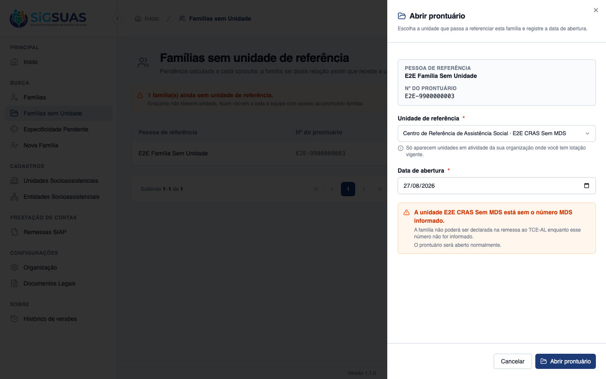
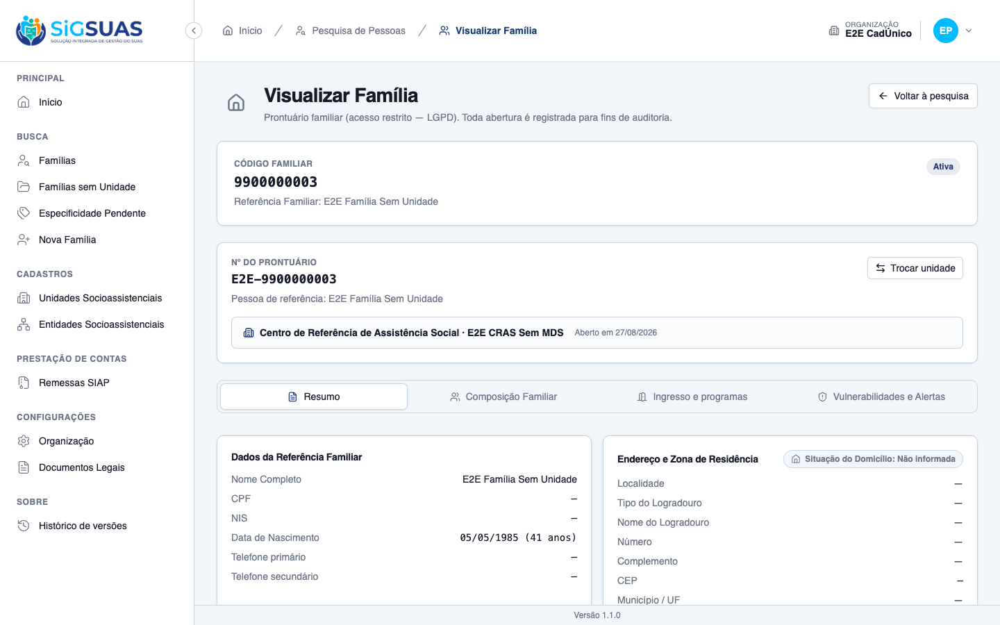
CA06 — Trocar a unidade de referência ATENDIDO · navegador
Critério (Gherkin): Dado que a família Silva está referenciada no "CRAS Centro" e sou Master Quando eu alterar a unidade de referência para o "CREAS" Então o sistema avisa que a equipe do "CRAS Centro" deixará de enxergar o prontuário E, ao confirmar, a alteração é salva E a trilha de auditoria da família registra a mudança, com autor e data
Como foi testado: Login como Master, prontuário da família referenciada no CRAS Centro → Trocar unidade → escolher E2E CREAS → confirmar em duas etapas.
- O aviso é exibido ANTES de gravar: “A equipe do E2E CRAS Centro deixará de enxergar o prontuário desta família. Confirme apenas se a responsabilidade pela família passou mesmo para a nova unidade.”
- O mecanismo é uma confirmação em duas fases: o primeiro PUT (confirmed: false) responde 422 com error_code “reference_unit_change_requires_confirmation” e devolve o aviso; o botão então muda para “Confirmar a troca”.
- O segundo PUT (confirmed: true) responde 200 OK e a alteração é salva (social_unit_id 1 → 2).
- A tela passa a exibir “Centro de Referência Especializado de Assistência Social · E2E CREAS”.
- A trilha de auditoria registra a mudança com autor e data: description=updated, causer_id = o Master, em 27/08/2026 03:51:28, com attribute_changes {social_unit_id: 1 → 2}.
- A própria tela declara a auditoria ao usuário: “A troca é registrada na trilha de auditoria da família, com autor e data.”
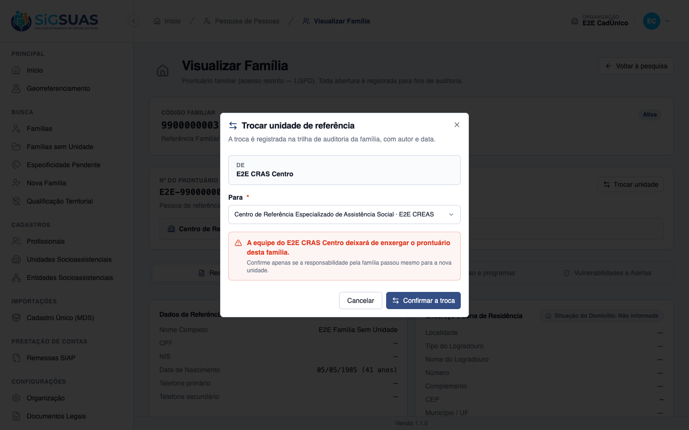
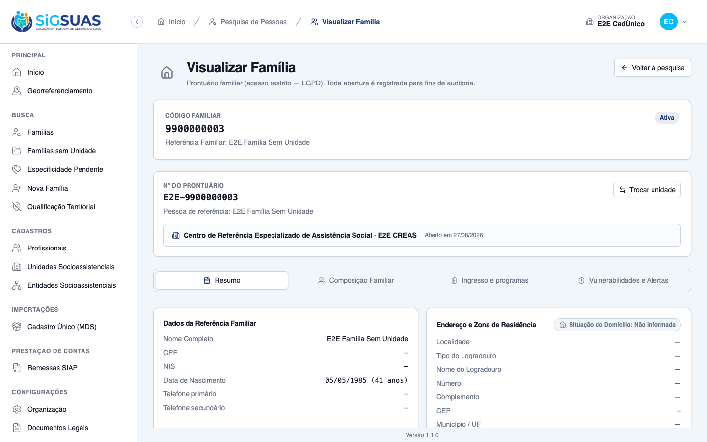
CA07 — Operacional não referencia em unidade onde não está lotado ATENDIDO · navegador
Critério (Gherkin): Dado que sou Operacional do Tenant lotado apenas no "CRAS Centro" Quando eu abrir um prontuário Então só posso atribuir o "CRAS Centro" como unidade de referência E o "CREAS" não é oferecido
Como foi testado: Como operador (lotado em E2E CRAS Centro e E2E CRAS Sem MDS), abertura do seletor de unidade no diálogo de abertura do prontuário.
- São oferecidas exatamente as duas unidades onde o profissional tem lotação vigente: “E2E CRAS Centro” e “E2E CRAS Sem MDS”.
- O “E2E CREAS” NÃO é oferecido — a unidade fora da lotação fica fora da lista.
- A própria tela declara a regra: “Só aparecem unidades em atividade da sua organização onde você tem lotação vigente.”
- Contraste na mesma massa: ao Master são oferecidas as três unidades do município (RN10), o que mostra que a restrição é do posto, não da tela.
- A suíte cobre também a tentativa por payload — esconder a unidade na tela não basta: “it offers only the units where the professional is assigned, and re…”.
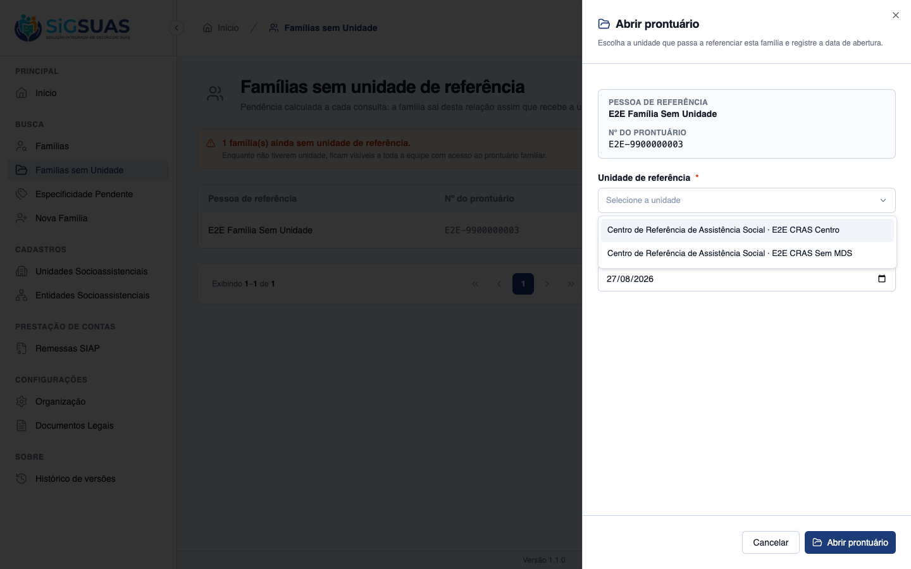
CA08 — Abrir prontuário não coloca em acompanhamento ATENDIDO · navegador
Critério (Gherkin): Dado que abri o prontuário da família Silva no "CRAS Centro" Quando eu consultar a situação dela Então a família consta com prontuário aberto E não consta como em acompanhamento no PAIF
Como foi testado: Consulta ao estado da família após a abertura do prontuário, na tela e em banco.
- A família consta com prontuário aberto: nº do prontuário, unidade de referência e data de abertura visíveis no cabeçalho.
- A situação da família permanece “Ativa” — o status não é tocado pela abertura, verificado em banco antes e depois.
- A regra está declarada no código: abrir prontuário NÃO coloca a família em acompanhamento PAIF/PAEFI; o campo de situação fica intocado.
- A suíte assere exatamente isso, comparando o valor da situação antes e depois da abertura.
- O próprio critério do chamado reconhece que o registro de acompanhamento “é próprio e ainda não foi feito” — o acompanhamento PAIF pertence à fase F3 e não existe no modelo de dados desta fase. O critério é atendido por desenho, e deverá ser revalidado quando o acompanhamento for implementado.
CA09 — Isolamento entre municípios ATENDIDO · automatizado
Critério (Gherkin): Dado que sou usuário do município A Quando eu abrir um prontuário e escolher a unidade de referência Então só me são oferecidas unidades socioassistenciais do município A
Como foi testado: Evidência automatizada. O ambiente de evidências possui uma única organização semeada, o que impede montar o cenário de dois municípios pelo navegador sem alterar a massa.
- Pest: “it offers only social assistance units of the acting municipality (…)” — PASS.
- Pest: “it refuses a unit of another municipality even when it comes in the payload” — PASS. A defesa não é apenas visual: a unidade de outro município é recusada mesmo enviada diretamente.
- Pest: “it treats a family of another municipality as a nonexistent record…” — PASS.
- Pest: “it never lists families of another municipality as pending (CA09/RN…)” — PASS.
Evidência por cobertura automatizada — ver Anexo.
Observações e ressalvas
Efeito da revisão da RN08 da #10617 sobre o aviso do CA06
Em 27/08/2026 foi revisada a regra de acesso da HU #10617: a família referenciada em unidade fora da lotação do profissional deixou de ser tratada como registro inexistente e passou a responder “acesso negado”, com o motivo declarado.
Isso não altera nenhum critério desta história — nenhuma evidência deste relatório depende daquele comportamento. Mas muda o sentido do aviso do CA06: quando o Master troca a unidade de referência, a tela avisa que “a equipe do CRAS Centro deixará de enxergar o prontuário”. Isso continua verdadeiro — a equipe anterior perde o acesso ao conteúdo —, porém agora ela recebe uma negativa explicando o motivo, em vez de ver o prontuário simplesmente desaparecer da sua lista.
Na prática: a equipe anterior passa a saber que o prontuário existe e saiu dali. Vale avaliar se a redação do aviso deve mencionar isso.
O 422 do CA06 é o mecanismo do aviso, não um erro
Ao trocar a unidade de referência, o primeiro PUT chega com confirmed: false e o servidor responde 422 com error_code: reference_unit_change_requires_confirmation, carregando o aviso previous_unit_loses_access. É assim que o sistema garante que o alerta seja produzido antes de qualquer gravação — e não depois. O diálogo então troca o botão para “Confirmar a troca”, e o segundo PUT (confirmed: true) grava e responde 200.
Quem ler o log de rede isolado pode confundir esse 422 com falha. Ele é parte do contrato.
Limite da massa de evidência (CA02)
O cenário do CA02 fala em 40 famílias sem unidade de referência; a massa de evidência tem uma. O que o critério exige — identificação pela pessoa de referência e caminho direto para a atribuição — está evidenciado, e a suíte cobre a permanência das demais na relação.
O limite que existia no CA04 foi resolvido: a massa passou a incluir uma família com endereço completo, em bairro nomeado a partir de uma unidade, o que permite demonstrar na tela que o sistema não deduz a unidade pelo endereço. Ver o CA04.
CA08 é atendido por desenho — e precisará de nova validação na F3
O critério exige que abrir o prontuário não coloque a família em acompanhamento no PAIF. Nesta fase o acompanhamento PAIF/PAEFI ainda não existe no modelo de dados: não há tabela nem coluna, e a situação da família se resume a Ativa e Inativa.
O próprio texto do critério no chamado reconhece isso — “porque esse registro é próprio e ainda não foi feito” —, e a regra de negócio explicita a fronteira: abrir prontuário não é colocar em acompanhamento, que é registro da fase F3. O código honra a regra deixando a situação intocada, e a suíte assere o valor antes e depois.
Ou seja: o critério está atendido, e atendido como foi escrito. A observação que fica é de agenda, não de conformidade — quando o acompanhamento chegar na F3, este critério deve voltar à mesa.
Integridade da massa
Os critérios CA01, CA05 e CA06 exigem alterar a unidade de referência da família de evidência. Cada alteração foi feita, evidenciada e revertida por re-execução do E2EProntuarioSeeder (idempotente). Estado confirmado ao final: a família volta a constar sem unidade de referência. Nenhum outro dado foi alterado.
Anexo — Cobertura automatizada (Pest — OpenFamilyRecordAction, OpenFamilyRecord, FamilyReferenceUnitIsolation)
PASS Tests\Unit\Family\OpenFamilyRecordActionTest
✓ it writes unit, opening date and author, defaulting the date to tod… 0.34s
✓ it honours an informed opening date (§10) 0.03s
✓ it flags only a unit without an MDS number (RN05/CA05) 0.01s
✓ it swaps the reference unit without reopening the record (RN01/RN02… 0.01s
PASS Tests\Feature\Family\OpenFamilyRecordTest
✓ it opens the record assigning the reference unit, the opening date… 0.06s
✓ it accepts an informed opening date and refuses a future one (§10) 0.03s
✓ it lists every family without a reference unit, by the name of the… 0.03s
✓ it drops the family from the pending list as soon as it gets a unit… 0.04s
✓ it never assigns a unit by itself — the payload must carry the choi… 0.04s
✓ it opens normally in a unit without an MDS number, warning without… 0.03s
✓ it warns about the previous team losing access before saving the ch… 0.04s
✓ it refuses a change on a record that was never opened, and a change… 0.03s
✓ it offers only the units where the professional is assigned, and re… 0.03s
✓ it offers every active unit of the municipality to the Master (RN10… 0.03s
✓ it keeps a unit that is not active out of the offer and out of the… 0.03s
✓ it does not let the {family:uuid} binding swallow the literal witho… 0.03s
✓ it blocks whoever cannot open records: no add-on, no active assignm… 0.03s
✓ it ships the record cover in the family details payload, so CA01 ho… 0.03s
PASS Tests\Feature\TenantIsolation\FamilyReferenceUnitIsolationTest
✓ it offers only social assistance units of the acting municipality (… 0.03s
✓ it refuses a unit of another municipality even when it comes in the… 0.03s
✓ it treats a family of another municipality as a nonexistent record… 0.03s
✓ it never lists families of another municipality as pending (CA09/RN… 0.03s
Tests: 22 passed (120 assertions)
Duration: 1.38s